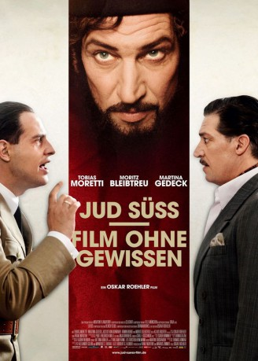

IMDB-Wertung: 6.0 / 10
IMDB-Wertung: 6.0 / 10  Metascore:
Metascore: 
Rise and fall of actor Ferdinand Marian, who takes the chance and stars in the anti-semitic movie Jud Süß (1940).
Alternativ: Jud Süss - Film ohne Gewissen
 IMDB-Wertung: 6.0 / 10 Metascore:
Rise and fall of actor Ferdinand Marian, who takes the chance and stars in the anti-semitic movie Jud Süß (1940).
Jahr: 2010
Dauer: 114 Minuten
FSK: 12
Land: Deutschland Studio: Concorde FilmverleihTonspuren:
Untertitel:
Auflösung: 1080p (1920x1040) Größe: 8622 MB
Genre: Drama, Krieg, Biographie
Regisseur: Oskar Roehler
Drehbuch: Jan Martin Scharf
Soundtrack: Martin Todsharow
Darsteller:
 Tobias Moretti als Ferdinand Marian
Tobias Moretti als Ferdinand Marian Martina Gedeck als Anna Marian
Martina Gedeck als Anna Marian Moritz Bleibtreu als Joseph Goebbels
Moritz Bleibtreu als Joseph Goebbels Armin Rohde als Heinrich George
Armin Rohde als Heinrich George Martin Feifel als Erich Knauf
Martin Feifel als Erich Knauf Paula Kalenberg als Kristina Söderbaum
Paula Kalenberg als Kristina Söderbaum Milan Peschel als Werner Krauß
Milan Peschel als Werner Krauß Robert Stadlober als Lutz
Robert Stadlober als Lutz Gerhard Liebmann als Von Remchingen
Gerhard Liebmann als Von Remchingen Waldemar Kobus als Herr Frowein
Waldemar Kobus als Herr Frowein Gudrun Landgrebe als Frau Frowein
Gudrun Landgrebe als Frau Frowein Haymon Maria Buttinger als Freisinger Bürger
Haymon Maria Buttinger als Freisinger Bürger David Baalcke als Journalist
David Baalcke als Journalist Justus von Dohnányi als Veit Harlan
Justus von Dohnányi als Veit HarlanDatei: X:\2010(G-M)\Jud Süß - Film ohne Gewissen (2010, FSK12, 1920x1040).mkv seit 19.07.2018
Festplatte: HD 2010(G-Z)-2011(A-F)
 Es gibt insgesamt 85 Filme in der Gruppe '2010(G-M)'
Es gibt insgesamt 85 Filme in der Gruppe '2010(G-M)'